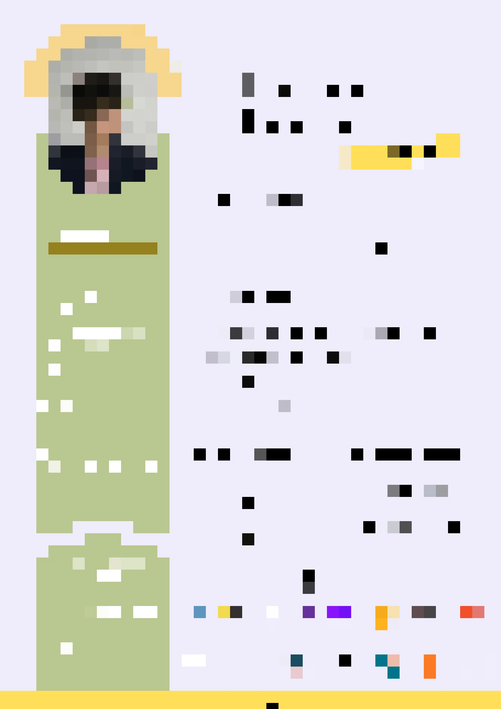

Who Am I?
If I had to highlight any aptitud I consider I own would be my attitude. I consider myself as a person who comprehends that nothing will be given for free, but by working as hard as I can. The reason why I have this disposition is to persue the future I always wanted to have as far as I remember.
However, I am not applying for this kind of jobs for earning money (many jobs gives that), but for being driven by an interest for learning as much as I can about the technlogies that are changing our world.
- Mahatma Gandhi
Skills
Soft-Skills
- Responsible
- Hard-Worker
- Patience
- Sociability
- Flexibility
Technical-Skills


Curriculum
Click here to see my CV
